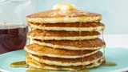

Pancakes

Description
As convenient as a store-bought mix can be, every home cook needs a good buttermilk pancake recipe in their repertoire. Don't have a tried-and-true favorite yet? You're in luck! The Allrecipes community can't get enough of these classic buttermilk pancakes. Reviewers say they're light, fluffy, moist, and full of rich flavor.
Ingredients
- Flour
- Sugar
- Leaveners
- Salt
- Buttermilk
- Milk
- Eggs
- Butter
Steps
-
Combine flour, sugar, baking powder, baking soda, and salt in a large bowl. Beat together buttermilk, milk, eggs, and melted butter in a separate bowl. Keep the two mixtures separate until you are ready to cook.
-
Heat a lightly oiled griddle or frying pan over medium-high heat. You can flick water across the surface and if it beads up and sizzles, it's ready.
-
Pour the wet mixture into the dry mixture; use a wooden spoon or fork to mix until it's just blended together. The batter will be a little lumpy which is what you want.
-
Pour or scoop the batter onto the preheated griddle, using approximately 1/2 cup for each pancake. Cook until bubbles appear on the surface, 1 to 2 minutes; flip with a spatula and cook until browned on the other side. Repeat with remaining batter.
-
Serve hot and enjoy!